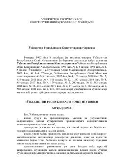

YKO'zbekiston Respublikasining yangi tahrirvdagi Konstitutsiyasi loyihasi va asosiy tamoyillari.
Ushbu hujjat O'zbekiston Respublikasining asosiy qonuni bo'lgan Konstitutsiyaning yangi tahriri loyihasini o'z ichiga oladi. Unda davlat suvereniteti, xalq hokimiyatchiligi, asosiy tamoyillar hamda fuqarolarning huquq va erkinliklari belgilab berilgan.